Libro FOA · Capítulo 06
Conectores y empalmes
Pérdidas, reflectancia, tipos de conectores, pulidos y procedimientos de terminación y empalme.
En este capítulo
Qué aprenderás
- Diferencia entre conectores y empalmes
- Requisitos de los conectores y empalmes
- Tipos de conectores
- Tipos de terminación de los conectores
- Tipos de empalme
- Procedimientos de empalme
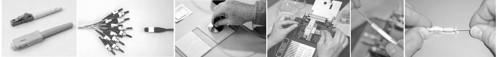
¿Conectores o Empalmes?
Los empalmes o terminaciones de fibra óptica se realizan de dos formas: 1) conectores que acoplan dos fibras para crear una unión temporal y/o conectar la fibra a una pieza del equipo de red o 2) empalmes que crean una unión permanente entre las dos fibras. Cualquiera de los dos métodos de terminación debe tener dos características principales: un buen rendimiento óptico indicado por una reflectancia mínima de baja pérdida y alta resistencia mecánica. Las terminaciones también deben tener el estilo adecuado para ser compatibles con el equipo en cuestión y estar protegidas contra el entorno en el que se instalan.
Probablemente ningún componente de la fibra óptica ha recibido tanta atención como el conector. Los fabricantes han ideado más de 80 estilos de conectores y una docena de formas diferentes de instalarlos. Sólo hay dos tipos básicos de empalmes, pero numerosas formas de realizarlos.
Afortunadamente tanto para los fabricantes como para los instaladores, sólo unos pocos tipos de uno u otro son los que se utilizan en la mayoría de las aplicaciones.
Se utilizan diferentes conectores y procedimientos de terminación para las fibras multimodo y monomodo. Las fibras multimodo son relativamente fáciles de terminar, por lo que la terminación sobre el terreno se suele realizar instalando conectores directamente en las fibras con recubrimiento o búfer ajustado mediante los procedimientos que se describen a continuación. La mayoría de las terminaciones monomodo de campo se realizan empalmando un pigtail de fábrica en el cable instalado en lugar de terminar la fibra directamente como se hace habitualmente con la fibra multimodo. Las terminaciones monomodo requieren un cuidado extremo en el montaje, especialmente en el pulido, para obtener un buen rendimiento (baja pérdida y reflectancia), por lo que suelen realizarse en instalaciones de fabricas limpias y controladas, con epoxi curado al calor y pulido a máquina.
La elección de un tipo de conector para cualquier instalación debe tener en cuenta si el conector es compatible con los sistemas previstos para utilizar la planta de cable de fibra óptica, si el proceso de terminación es familiar para el instalador y si el conector es aceptable para el cliente. Si los sistemas aún no están especificados, puede ser necesario utilizar patchcords híbridos con conectores diferentes en cada extremo.
Si el instalador no está familiarizado con la instalación de conectores, puede que necesite formación. Y, a veces, puede que al usuario se le haya vendido un tipo de conector que no es ideal para la instalación, por lo que el instalador puede tener que discutir las ventajas de otros tipos con el usuario antes de comprometerse con el proyecto.
Los empalmes se consideran uniones permanentes. El empalme por fusión es el más utilizado, ya que ofrece la menor pérdida y reflectancia, así como la unión más fiable. Prácticamente todos los empalmes monomodo son por fusión. El empalme mecánico se utiliza para la restauración temporal y para la mayoría de los empalmes multimodo.
Más información sobre el empalme a continuación.
Especificaciones de Rendimiento
Pérdidas Ópticas
La principal especificación de los conectores o empalmes es la pérdida o la cantidad de luz que se pierde en la conexión. Cuando decimos pérdida de conector o pérdida de empalme, en realidad queremos decir pérdida de "conexión", es decir, la pérdida de un par de conectores acoplados,
expresado en "dB". Un conector simple no puede tener pérdidas por definición. La pérdida de un empalme es, obviamente, la luz que se pierde en la unión entre dos fibras.
Para probar un conector es necesario acoplarlo a conectores de referencia, que deben ser conectores de alta calidad para que no afecten negativamente a la pérdida encontrada durante la medición cuando se acoplen a un conector desconocido. Este es un punto importante que con frecuencia no se comprenden del todo. Para medir las pérdidas de los conectores, hay que acoplarlos a un conector similar que se sepa que funciona bien. Cuando un conector que se está probando se acopla a varios conectores diferentes, puede tener pérdidas diferentes, porque esas pérdidas dependen del conector de referencia al que se acopla. La comprobación de empalmes es más difícil, ya que se trata de una unión permanente, por lo que la comprobación de empalmes se realiza de forma indirecta mediante un instrumento denominado OTDR.
Las pérdidas en conectores y empalmes se deben a varios factores. Las pérdidas se minimizan cuando los dos núcleos de fibra son idénticos, están perfectamente alineados y se tocan, los conectores o empalmes están bien terminados y no hay suciedad en la unión. Sólo se propagará la luz que se acople al núcleo de la fibra receptora, por lo que el resto de la luz se convierte en pérdida del conector o empalme.
Los huecos entre las dos fibras causan dos problemas: pérdida de inserción y reflectancia. El cono de luz que emerge del conector se extenderá sobre el área fuera del núcleo de la fibra receptora y se perderá. Además, la separación de la unión entre las fibras provoca una reflexión cuando la luz encuentra el cambio de índice de refracción de la fibra de vidrio al aire en la separación. Esta reflexión (denominada reflexión de Fresnel) asciende a aproximadamente el 5% en los conectores planos pulidos típicos, y significa que ningún conector con separación tendrá menos de aproximadamente 0.3 dB de pérdida. Esta reflexión se denomina reflectancia o pérdida óptica de retorno, y puede ser un problema en los sistemas basados en láser. Los conectores utilizan una serie de técnicas de pulido para crear un extremo convexo en la fibra que garantice el contacto físico de los extremos de la fibra para minimizar la reflexión. En los empalmes mecánicos, es posible reducir la reflexión utilizando cortes no perpendiculares, que hacen que las reflexiones se absorban en el revestimiento de la fibra.
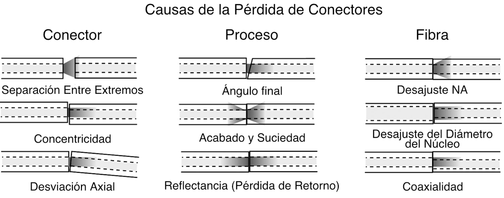
El extremo de la fibra debe estar bien pulido y limpio para minimizar las pérdidas. Una superficie no lisa o la suciedad pueden dispersar y absorber la luz. Dado que la fibra óptica es tan pequeña, la suciedad típica del aire puede ser una fuente importante de pérdidas. Siempre que los conectores no estén terminados, deben cubrirse con los tapones antipolvo suministrados por el fabricante para proteger el extremo de la férula del conector de la suciedad. Uno nunca debe tocar el extremo de la férula, ya que los aceites de la piel hacen que la fibra atraiga la suciedad. Antes de conectar y probar, es aconsejable limpiar los conectores con toallitas sin pelusa humedecidas con alcohol isopropílico o limpiadores de fibra en seco.
Dos fuentes de pérdidas causadas por fibras no coincidentes son direccionales; la apertura numérica (NA) y las diferencias de diámetro del núcleo inherentes a las fibras que se unen. Las diferencias en estos dos factores crearán conexiones con pérdidas diferentes en función de la dirección de propagación de la luz. La luz procedente de una fibra con una NA mayor llenará en exceso el núcleo de la fibra receptora y será más sensible a la angularidad y a la separación de los extremos, por lo que la transmisión de una fibra de NA mayor a otra de NA menor tendrá mayores pérdidas que en la dirección inversa. Del mismo modo, la luz procedente de una fibra de núcleo más grande tendrá una pérdida elevada acoplada a una fibra de diámetro más pequeño, mientras que se puede acoplar una fibra de diámetro pequeño a una de diámetro grande con una pérdida mínima, ya que es mucho menos sensible a la separación del extremo o al desplazamiento lateral.
Estos desajustes de fibras se producen por dos motivos: la necesidad ocasional de interconectar dos fibras distintas y las variaciones de producción en fibras de las mismas dimensiones nominales. Las desviaciones de producción son de sólo unos micrones y contribuyen a pequeñas pérdidas, pero las pérdidas causadas por los desajustes serán direccionales, causando mayores pérdidas al transmitir de mayor a menor fibras del núcleo.
Con dos fibras multimodo de uso común hoy en día (50/125 y 62.5/125) y otras dos que se han utilizado ocasionalmente en el pasado (100/140 y 85/125) y varios tipos de fibra monomodo en uso, es posible que a veces haya que conectar fibras distintas o utilizar sistemas diseñados para un tamaño de fibra en otro. Si conectas una fibra más pequeña a otra más grande, las pérdidas por acoplamiento serán mínimas, pero si conectas fibras más grandes a otras más pequeñas se producen pérdidas considerables en la unión.
Las pérdidas típicas de los conectores suelen ser inferiores a 0.3 dB para conectores monomodo o multimodo pulidos en fábrica mediante técnicas de adhesivo/pulido. Pocos instaladores practican la terminación monomodo en campo, generalmente empalmando pigtails de fábrica en las fibras, ya que el pulido SM no es tan fácil sobre el terreno, especialmente en términos de reflectancia. Las terminaciones multimodo sobre el terreno son habituales, ya que los instaladores experimentados pueden obtener resultados comparables a las terminaciones de fábrica con técnicas de adhesivo/pulido. La terminación en campo de conectores prepulidos/empalmados utilizando una cuchilla de precisión (las fabricadas para empalmes por fusión) puede producir resultados consistentes en torno a los 0.5 dB, mientras que los cleavers mas simples pueden producir pérdidas a menudo en el rango de 0.75 dB. Pocas normas industriales ponen límites a las pérdidas de los conectores, pero la TIA 568 exige pérdidas de conexión inferiores a 0.75 dB y pérdidas de empalme inferiores a 0.3 dB, pérdidas elevadas pero límites que permitirán utilizar conectores prepulidos/empalmados y la mayoría de empalmes mecánicos.
Reflectancia
La reflectancia o pérdida óptica de retorno (que también se ha denominado "reflexión de retorno") del conector es la cantidad de luz que se refleja de vuelta por la fibra hacia la fuente por las reflexiones de la luz en la interfaz de la superficie pulida del extremo del conector y el aire. Se denomina reflexión fresnel y está causada por la luz que atraviesa el cambio en el índice de refracción en la interfaz entre la fibra (n=1.5) y el aire (n=1). La reflexión es principalmente un problema de los conectores, pero también puede afectar a los empalmes mecánicos que contienen un gel de igualación de índices para evitar la reflexión.
La reflectancia es uno de los componentes de la pérdida del conector, y representa aproximadamente una pérdida de 0.3 dB para un conector sin contacto o con separación en el que las dos fibras no hacen contacto. La minimización de la reflectancia es necesaria para obtener el máximo rendimiento de los sistemas láser monomodo de alta velocidad de bits.
especialmente las señales de CATV moduladas en AM. En los sistemas multimodo, las reflexiones son menos problemáticas, pero pueden aumentar el ruido de fondo en la fibra.
Dado que este problema afecta más a los sistemas monomodo, los fabricantes se han centrado en resolverlo para sus componentes monomodo, pero los conectores multimodo también se benefician, ya que cualquier reducción de la reflectancia también reduce las pérdidas. Se han utilizado varios métodos para reducir la reflectancia, principalmente el pulido convexo de los contactos físicos (PC) en la férula en el extremo del conector, lo que reduce la reflexión fresnel. La técnica consiste en pulir la superficie del extremo de la fibra hasta conseguir una superficie convexa o, mejor aún, ligeramente inclinada (APC o contacto físico en ángulo) para evitar la reflexión.
Conectores
Estilos de Conectores de Fibra Óptica
Desde que se introdujo la tecnología de fibra óptica a finales de los años 70, se han desarrollado numerosos estilos de conectores, probablemente más de 100 diseños. Cada nuevo diseño pretendía ofrecer un mejor rendimiento (menos pérdida de luz y reflectancia) y una terminación más fácil, rápida y/o barata. Por supuesto, el mercado acaba determinando qué conectores tienen éxito. Sin embargo, se han hecho varios intentos de estandarizar los conectores. Algunos eran exclusivos de redes o sistemas. FDDI, la primera LAN de fibra, y ESCON, la red periférica del mainframe de IBM, requerían conectores únicos. La TIA 568 originalmente exigía conectores SC como estándar, pero cuando los usuarios siguieron utilizando más ST que SC y se introdujo toda una nueva generación de conectores más pequeños, la TIA-568B se modificó para decir que cualquier conector estandarizado por un documento estándar FOCIS era aceptable.
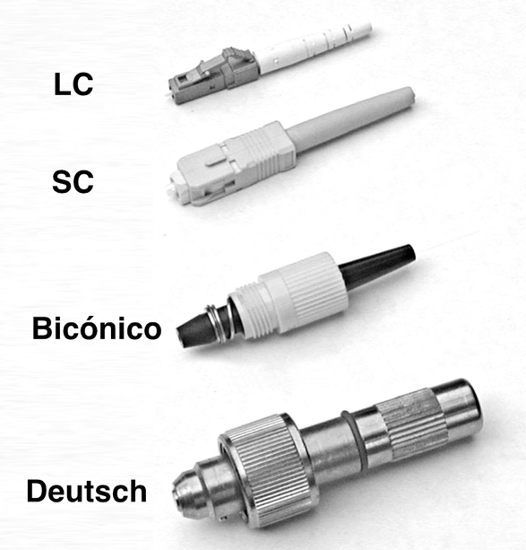
Los cuatro conectores muestran la evolución de los conectores de fibra óptica. El conector inferior es un Deutsch 1000, el primer conector de fibra óptica disponible en el mercado. En realidad, se trataba de un empalme mecánico, en el que las fibras se sujetaban dentro del conector con un pequeño mandril apretado con un tornillo. La boquilla se accionaba por resorte, lo que permitía exponer la fibra para cortarla y acoplarla a una pequeña lente de plástico en un adaptador de acoplamiento. El adaptador de acoplamiento también tenía un fluido de igualación de índices para reducir las pérdidas, pero creaba un problema de suciedad.
El Bicónico de AT&T fue desarrollado por los Laboratorios Bell a finales de los años setenta. La férula bicónica se moldeó a partir de plástico relleno de vidrio. Los primeros Bicónicos tenían férulas moldeadas alrededor de la fibra, hasta que se desarrolló una matriz con un pasador minúsculo de 125 micrones (0.005 pulgadas) en el centro exacto. Cuando los Bicónicos se adaptaron a la fibra monomodo, las férulas se desgastaban en una maquina especial para centrar la fibra.
El SC, que se introdujo a mediados de la década de 1980, utilizaba un nuevo invento, la férula de cerámica moldeada, que revolucionó la terminación de la fibra óptica.
La cerámica era un material ideal para las férulas. Se podía fabricar a bajo coste mediante moldeo, mucho más barato que mecanizar metal, por ejemplo. Era extremadamente estable con la temperatura y tenía unas características de dilatación similares a las del vidrio, lo que evitaba el "pistoneo" cuando la férula se despegaba, un problema con las férula de metal o plástico. Su dureza era similar a la del vidrio, lo que facilitaba el pulido. Además, se adhería fácilmente a las fibras mediante epoxis o adhesivos anaeróbicos. Hoy en día, prácticamente todos los conectores utilizan la férula cerámica, normalmente de 2.5 mm de diámetro (SC, ST, FC) o de 1.25 mm (LC, MU.).
El conector LC de la parte superior se introdujo a finales de la década de 1990 para miniaturizar los conectores y conseguir una mayor densidad en paneles de conexión o equipos. Utiliza una férula cerámica más pequeña, de 1.25 mm de diámetro. El LC es el conector preferido para telecomunicaciones y redes de datos de alta velocidad (>1 Gb/s).
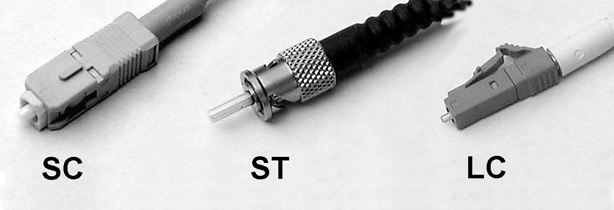
Aunque se han desarrollado más de cien tipos de conectores a lo largo de la historia de la fibra óptica, sólo los tres conectores mostrados anteriormente, SC, LC y ST, son los conectores de fibra óptica más utilizados en la actualidad.
El ST (una marca comercial de AT&T) fue uno de los primeros conectores en utilizar férulas cerámicas y sigue siendo uno de los conectores más populares para redes multimodo, como la mayoría de edificios y campus. Tiene una montura de bayoneta y una larga férula cilíndrica para sujetar la fibra. La mayoría de las férulas son de cerámica, pero algunas son de metal o plástico. Y como son de resorte, tienes que asegurarte de que están bien asentadas. Si tienes pérdidas elevadas, vuelve a conectarlos para ver si hay alguna diferencia.
SC es un conector a presión muy utilizado en sistemas monomodo para
su excelente rendimiento y los sistemas multimodo porque fue el primer conector elegido como conector estándar para TIA-568 (ahora se acepta cualquier conector con norma FOCIS.) Es un conector a presión que se enclava con un simple movimiento de empujar y tirar. También está disponible en configuración dúplex.
LC es un conector relativamente nuevo que utiliza una férula de 1.25 mm, la mitad que el ST. Suele utilizarse en forma dúplex. Es un conector de férula cerámica estándar, fácil de terminar con cualquier adhesivo. Buen rendimiento, muy favorecido para monomodo y el conector de elección para transceptores multimodo para velocidades gigabit y superiores, incluidas Ethernet multimodo y Fibre Channel.
Conectores especiales de fibra óptica
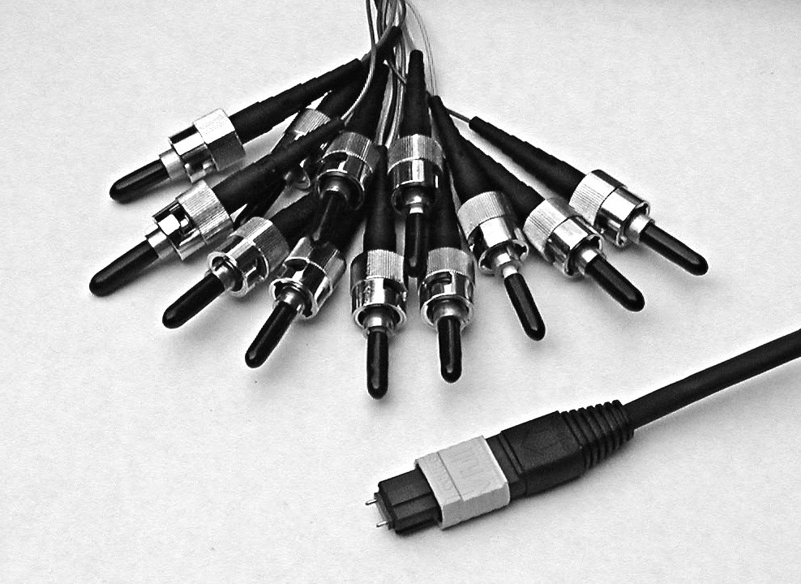
Existen varios conectores de fibra óptica especiales, como este conector MPO multifibra utilizado en sistemas de cableado prefabricado, conectores militares, conectores submarinos o para aeronaves, conectores de fibra óptica de plástico (POF), etc. La mayoría se han diseñado para aplicaciones muy específicas y requieren pruebas de cualificación extremadamente rigurosas. Algunos, como el Mil-C-38999, son conectores de cableado de cobre adaptados para alojar férulas de fibra óptica. Muchos de estos conectores requieren tipos de cable, procedimientos de terminación, limpieza, manipulación y procedimientos de prueba especiales. Consulte las instrucciones del fabricante siempre que trabaje con este tipo de conectores.
Popularidad de los Conectores
Hay dos conectores que se han convertido en los más populares en todo el mundo: el SC y el LC. El SC es un diseño probado y ya se han construido muchos sistemas en torno a él. En el cableado de las instalaciones sigue habiendo muchos ST en servicio, pero los nuevos suelen utilizar SC. Los LC son populares entre los fabricantes de transceptores, ya que permiten que estos dispositivos sean mucho más pequeños y, por tanto, que la electrónica de los sistemas tenga una densidad de puertos mucho mayor. Internacionalmente hay sistemas que utilizan MU, E-200 y otros, pero su popularidad es menor que los SC y LC. El conector multi-fibra MPO se utiliza en algunos sistemas de cableado prefabricado de alta densidad, ya que puede tener varias filas de 12 o 16 fibras en un solo conector. Debido a la dificultad de su fabricación, no se termina sobre el terreno. También tiene un gran inconveniente, la dificultad de probar los cables con equipos de prueba convencionales.
Construcción de Conectores
La mayoría de los conectores disponibles hoy en día utilizan férulas de cerámica para sujetar y alinear las fibras. La cerámica se utiliza porque se adhiere bien al vidrio, es fácil de pulir y tiene una expansión térmica muy baja, como la fibra de vidrio. El extremo posterior de la férula cerámica se pega o engarza al cuerpo del conector. La parte posterior del conector tiene forma para aceptar un manguito de engarce que se utiliza con cables simplex con revestimiento para engarzar los miembros de resistencia de la fibra de aramida al cuerpo del conector, proporcionando resistencia mecánica a la terminación del cable.
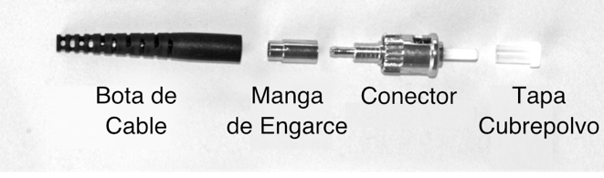
Formas y Pulidos de férulas de Conectores
Los conectores de fibra óptica pueden tener distintas formas o acabados de férula, que suelen denominarse acabado final o tipo de pulido. Los primeros conectores, que no tenían férulas con guías fijas y podían girar en los adaptadores de acoplamiento, siempre tenían un espacio de aire entre los conectores para evitar que giraran y arañaran los extremos de las fibras. Los extremos de las férulas se pulían sobre superficies duras y planas.
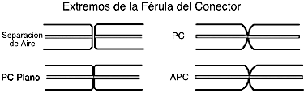
A partir de los ST y FC, que tenían sistemas de enganche con guías fijas, los conectores se diseñaron para que contactaran firmemente, lo que ahora llamamos conectores de contacto físico (PC). Estos primeros conectores aún tenían el extremo plano pulido. La reducción de la separación de espacio disminuyó las pérdidas y la reflectancia (muy importante para los sistemas monomodo basados en láser), ya que la luz tiene una pérdida de aproximadamente el 5% (~0.25 dB) en cada separación y la luz se refleja en la fibra. Mientras que los conectores de separación de espacio generalmente tenían pérdidas de 0.5 dB o más y un reflectancia de -20 dB, los conectores PC tenían pérdidas típicas más bajas de 0.3 dB y una reflectancia más baja de -30 a -40 dB. Los conectores de PC debían pulirse sobre una superficie plana con una almohadilla de goma blanda para poder pulir el extremo convexo.
Poco después, se determinó que pulir las férulas del conector hasta obtener una cara final convexa produciría una conexión aún mejor. La férula convexa garantizaba que los núcleos de fibra estuvieran en contacto. Las pérdidas eran inferiores a 0.3 dB y la reflectancia -40 dB o superior.
La solución definitiva para los sistemas monomodo extremadamente sensibles a las reflexiones, como la televisión por cable o los enlaces de telecomunicaciones de alta velocidad de bits, fue angular el extremo de la férula 8 grados para crear lo que llamamos un conector APC o PC angulado. Entonces, cualquier luz reflejada se encuentra en un ángulo que se absorbe en el revestimiento de la fibra, lo que da como resultado una reflectancia de >-60 dB.
Códigos de Color de los Conectores:
Desde los primeros días de la fibra óptica, el naranja, negro o gris era multimodo y el amarillo, monomodo. Sin embargo, la aparición de conectores metálicos como los FC y ST dificultó la codificación por colores, por lo que se utilizaron más a menudo botas de alivio de tensión de colores en la fibra o el cable para identificar los conectores. A veces se ignora el color del conector, por lo que el usuario debe identificar el tipo de fibra a partir del cable.
El código de colores TIA 568 para cuerpos y/o botas de conectores es Beige (arena) para fibra multimodo excepto aqua para fibra optimizada para láser, Azul para fibra monomodo y Verde para conectores APC (en ángulo).
Procedimientos de Terminación o Conectorización
Los conectores multimodo suelen instalarse sobre el terreno en las fibras de los cables después de tirar de ellas, mientras que los conectores monomodo suelen instalarse empalmándolos en conectores o pigtails hechos en fábrica. Las tolerancias en las terminaciones monomodo son mucho más estrictas que en las multimodo y los procesos de pulido son más críticos, por lo que la terminación monomodo se realiza mejor en un entorno de fábrica utilizando máquinas pulidoras. Se pueden instalar conectores monomodo sobre el terreno para redes de datos de baja velocidad, pero es posible que no se consigan pérdidas inferiores a 1 dB y que la reflectancia sea un problema.
Los conectores pueden instalarse directamente en la mayoría de los tipos de cable, incluidos los cables de fibras con recubrimiento o búfer ajustado como los cables simplex, zipcord y breakout, en los que los elementos de resistencia de la fibra de aramida del cable se engarzan o pegan al cuerpo del conector para crear un conector resistente. Los conectores pueden fijarse a las fibras con recubrimiento de 900 micrones de los cables de distribución, pero la terminación no es tan resistente como la de los cables con cubierta, por lo que deben colocarse en paneles de conexión o cajas para su protección. Las fibras con recubrimiento de 250 micrones en los cables de tubo holgado no pueden terminarse fácilmente a menos que tengan un refuerzo llamado breakout kit o kit de furcación, en el que cada fibra va dentro de un tubo de plástico más grande. Por lo general, los cables de tubo holgado y cinta se terminan empalmando en un pigtail terminado.
Los cables pueden ser tirados con conectores ya colocados en ellos, siempre y cuando, y es una gran condición, puedas lidiar con dos problemas: En primer lugar, la longitud debe ser precisa. Si es demasiado corta, hay que tirar de otra más larga (no es rentable empalmar); si es demasiado larga, se malgasta dinero y hay que almacenar el cable sobrante. En segundo lugar, los conectores deben estar protegidos. Algunos fabricantes de cables y conectores ofrecen fundas protectoras para cubrir los conectores, pero aun así hay que tener mucho más cuidado al tirar de los cables. Se puede considerar la posibilidad de terminar un extremo y tirar del otro para no arriesgar los conectores. Cada vez hay más gente que instala sistemas pre-terminados con el conector multifibra MTP 12. Es un conector muy pequeño, no mucho más grande que un ST o SC, pero termina hasta 12 fibras. Los fabricantes venden cables multi-fibra con MTP que se conectan a paneles de conexión pre-terminados con ST o SC.
Terminaciones Multimodo
Existen varios tipos de terminaciones para fibras multimodo. Cada versión tiene sus ventajas e inconvenientes, por lo que aprender más sobre cómo funciona cada una ayuda a decidir cuál utilizar.
Terminaciones Monomodo
La fibra monomodo requiere diferentes conectores y técnicas de pulido que se realizan mejor en un entorno de fábrica. En consecuencia, la mayoría de las fibras monomodo suelen terminarse en campo empalmándolas en un pigtail terminado en fábrica. La terminación monomodo requiere conectores especiales con tolerancias mucho más estrictas en la férula, especialmente en el orificio para la fibra. El pulido requiere una lija especial de pulido con diamante sobre una almohadilla de goma suave y una suspensión de pulido para obtener una baja reflectancia. Pero se pueden colocar conectores SM en terreno si se sabe lo que se hace. Las pérdidas serán mayores y la reflectancia elevada.
Terminaciones Adhesivas
La mayoría de los conectores utilizan epoxis u otros adhesivos para sujetar la fibra en la férula del conector y pulir el extremo de la fibra hasta conseguir un acabado liso. Siga cuidadosamente los procedimientos de terminación, ya que se han desarrollado para producir las pérdidas más bajas y las terminaciones más fiables. Utilice sólo los adhesivos especificados, ya que la unión de la fibra a la férula es fundamental para obtener bajas pérdidas y fiabilidad a largo plazo. Hemos visto a gente utilizar epoxis de ferretería, Crazy Glue, lo que sea. Y se han arrepentido de haberlo hecho. Sólo deben utilizarse adhesivos aprobados por los fabricantes u otros distribuidores de conectores. Si el adhesivo falla, lo que no era raro cuando las férulas de los conectores eran de metal, la fibra "pistoneará"- que sobresalen o retroceden hacia la férula, lo que provoca grandes pérdidas y posibles daños en un conector acoplado.
El proceso de pulido consta de tres pasos, pero sólo dura un minuto: "pulido al aire" para rebajar la fibra que sobresale, pulido en una almohadilla suave con la fibra sujeta perpendicularmente a la superficie de pulido con un disco pulidor y un rápido pulido fino final.
Epoxi/Pulido
La mayoría de los conectores, incluidas prácticamente todas las terminaciones hechas en fábrica, son del tipo simple "epoxi/pulido", en el que la fibra se pega al conector con epoxi y el extremo se pule con una lija pulidora especial. Son las conexiones más fiables, con menos pérdidas (menos de 0.5 dB) y más baratas, sobre todo si se hacen muchos conectores. El pequeño punto de epoxi endurecido que rodea la fibra en el extremo de la férula incluso facilita mucho los procesos de corte y pulido, prácticamente infalibles. El epoxi puede dejarse endurecer durante la noche o curarse en un horno económico. Nunca se debe utilizar una "pistola de calor" para intentar curar el epoxi más rápido, ya que el calor desigual puede no curar todo el epoxi o puede sobrecalentar parte del mismo, lo que impedirá que llegue a curar. Tampoco utilice hornos de "Hot Melt", ya que utilizan una temperatura mucho más alta y arruinarán el epoxi.
"Hot Melt" Adhesivo/Pulido
Este es un nombre comercial de 3M para un conector que ya tiene el epoxi (en realidad un pegamento termofijable) dentro del conector. Se introduce el conector en un horno especial. En unos minutos, el pegamento se funde, así que sacas el conector, insertas la fibra pelada, la dejas enfriar y ya está lista para pulir. Rápido y fácil, con pocas pérdidas, pero no tan barato como el tipo epoxi, se ha convertido en el favorito de muchos contratistas que instalan cantidades relativamente pequeñas de conectores. Recuerda que necesitas un horno especial para Hot Melt, ya que necesita una temperatura mucho más alta que la que se utiliza para curar el epoxi.
Adhesivo/Pulido Anaeróbico
Estos conectores utilizan un adhesivo "anaeróbico" de curación rápida que se endurece más rápido que otros tipos de adhesivos. Se utilizan varias técnicas para aplicar el adhesivo, como inyectarlo en el conector antes de insertar la fibra o simplemente pasar un paño con adhesivo sobre la fibra antes de insertarla en el conector. Estos adhesivos se secan en 5 minutos con solo dejarles curar o en 30 segundos si se utilizan con un acelerador químico.
Los conectores anaeróbicos funcionan bien si tu técnica es buena, pero algunos no tienen el amplio rango de temperaturas de los epoxis. Muchos instaladores están utilizando Loctite 648, con o sin la solución aceleradora, que es limpio y fácil de usar.
El Proceso de Terminación o Conectorización
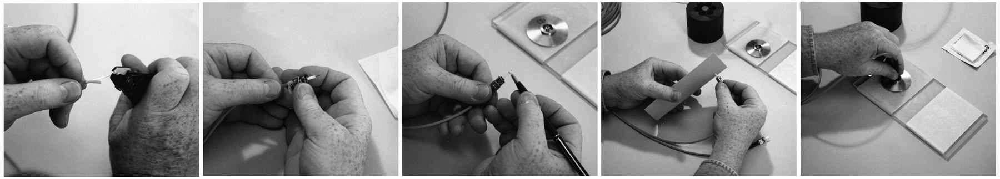
Para todos los tipos de conectores adhesivos/pulidos, el proceso de terminación es similar. Se empieza por preparar el cable, quitándole la cubierta exterior y cortando los elementos resistentes. A continuación, se pela la fibra con una herramienta especial que retira la cubierta de protección plástica sin dañar la fibra. A continuación, se limpia la fibra y se deja a un lado. Se aplica adhesivo al conector o a la fibra y ésta se inserta y se engarza en el cuerpo del conector.
Una vez haya curado el adhesivo, la fibra se corta cerca del extremo de la férula. El pulido se realiza en tres pasos. Primero se pule al aire para rebajar la fibra cortada hasta cerca de la superficie del extremo de la férula. A continuación, se pule con dos grados diferentes de lija abrasiva colocada sobre una almohadilla de goma utilizando un disco de pulido para mantener la fibra perpendicular a la superficie.
Inspeccione el extremo pulido de la férula del conector con un microscopio de inspección de fibra óptica. Consulte el capítulo Pruebas para obtener más información sobre la inspección de conectores.
Un instalador experimentado puede terminar cables multifibra en aproximadamente un minuto por fibra, utilizando el tiempo necesario para curar el adhesivo para preparar otros conectores y reducir el tiempo por conector.
Es importante seguir cuidadosamente los procedimientos de terminación, ya que se han desarrollado para producir las pérdidas más bajas y las terminaciones más fiables. Utilice sólo los adhesivos especificados, ya que la unión entre la fibra y la férula es fundamental para obtener pérdidas bajas y fiabilidad a largo plazo. Y, como en todo, la práctica hace al maestro.
Crimpado/Pulido
En lugar de pegar la fibra en el conector, estos conectores utilizan un engarce en la fibra para sujetarla. La mayoría de los tipos disponibles en el pasado ofrecían unas pérdidas marginales, por lo que ya no están disponibles. Espera asumir pérdidas más elevadas a cambio de una velocidad de terminación más rápida. Una buena opción si solo instala pequeñas cantidades y su cliente las acepta.
Conectores prepulidos/Prepulidos con Empalme Mecánico (Splice-on Connectors)
Los conectores prepulidos/empalmados y empalmados eliminan la necesidad de adhesivos y pulido sobre el terreno mediante la terminación de los conectores en un tramo de fibra en fábrica y su unión a la fibra con un empalme mecánico (conectores prepulidos/empalmados) o un empalme por fusión (conectores empalmados, denominados SOC).
La terminación de la fibra se convierte en un proceso de empalme en lugar de los métodos de pulido más complicados. El proceso de terminación consiste en cortar la fibra y unir el conector con un empalme mecánico integrado o con una máquina de empalme por fusión. Es más rápido que los conectores adhesivos/pulidos cuando lo realiza un técnico experimentado.
Estos conectores requieren un análisis de los aspectos económicos de su uso. Ambos métodos requieren inversión en equipos costosos. Los conectores prepulidos/empalmados suelen requerir kits de terminación especiales para el conector de cada fabricante debido a la singularidad del conector y del empalme. Algunos kits proporcionan una cuchilla barata que es difícil de usar, por lo que debe sustituirse por una cuchilla de precisión como las que se utilizan con las empalmadoras de fusión. Los conectores de empalme requieren una máquina de empalme por fusión, más cara que los kits para conectores de empalme prepulidos y algunos de estos conectores sólo funcionan con máquinas de empalme específicas.
Los conectores en sí son mucho más caros que un conector típico utilizado para la terminación con adhesivo/pulido. Los de empalme mecánico suelen ser mucho más caros que los conectores de empalme por fusión. Otro factor que influye en el coste es el rendimiento. Los conectores con empalme por fusión tendrán menos pérdidas y un rendimiento de prácticamente el 100%, mientras que los conectores con prepulido/empalme mecánico tendrán unas pérdidas medias superiores y un rendimiento inferior.
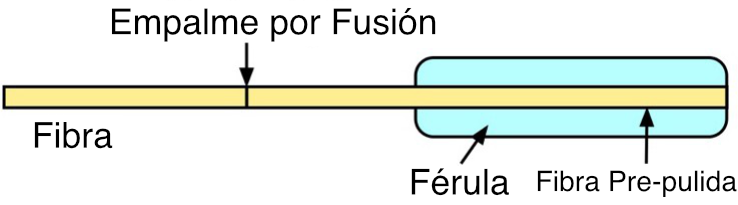
Conector de empalme por fusión
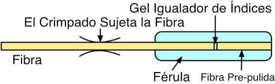
Conector pre-pulido/con empalme mecánico
Consejos Para Terminaciones En Campo
A continuación, le indicamos algunas cosas que debe tener en cuenta cuando termine conectores sobre el terreno. Siguiendo estas pautas ahorrará tiempo, dinero y frustraciones.
Haga lo que haga, siga siempre al pie de la letra las instrucciones de terminación del fabricante.
Elija el conector con cuidado y aclárelo con el cliente si no es del tipo epoxi/pulido. Algunos clientes tienen opiniones muy firmes sobre los tipos o marcas de conectores utilizados en su trabajo.
NUNCA lleves un nuevo tipo de conector al campo hasta que hayas instalado suficientes en la oficina o el laboratorio para saber que puedes colocarlos con éxito. ¡El campo no es el lugar para experimentar ni aprender! Uno de los mayores factores de costo al instalar conectores es el rendimiento, es decir, cuántos pasan las pruebas. El factor que más influye en el rendimiento es la experiencia del instalador.
Tenga las herramientas adecuadas para el trabajo. Asegúrate de que tienes las herramientas adecuadas y de que están en buen estado antes de ponerte manos a la obra. Esto incluye todas las herramientas de terminación, las herramientas para cables y los equipos de prueba. ¿Sabe si sus cables de prueba son buenos? Sin eso, siempre probará terminaciones buenas como malas. Cada vez son más los instaladores que poseen sus propias herramientas, como los mecánicos de coches, porque dicen que es la única manera de asegurarse de que las herramientas están bien cuidadas.
El polvo y la suciedad son tus enemigos. Es muy difícil conectorizar o empalmar en un lugar polvoriento. Intenta trabajar en el lugar más limpio posible. Utiliza toallitas que no suelten pelusa (¡no paños de algodón ni trapos hechos con camisetas viejas!) para limpiar todos los conectores antes de conectarlos o probarlos. No trabajes debajo de las rejillas de la calefacción, ya que te soplarán suciedad continuamente. Cubre los conectores y los paneles de conexión cuando no los utilices. Tápalos para mantenerlos limpios.
No pulas en exceso. En contra del sentido común, pulir demasiado es tan malo como pulir poco. La férula cerámica de la mayoría de los conectores actuales es mucho más dura que el vidrio de la fibra. Si se pule demasiado, se producirá una socavación de la fibra y se creará una superficie de fibra cóncava y no convexa como debería ser, lo que aumentará las pérdidas. Unas pocas pasadas es todo lo que se necesita.
Cambie la lija de pulido con regularidad. El pulido acumula residuos y suciedad en la lija que pueden causar problemas después de demasiados conectores y provocar un mal acabado final. Compruebe las especificaciones del fabricante.
Inspeccione y pruebe, luego documente. Es muy difícil solucionar los problemas de los cables cuando no se sabe el largo o su distancia, dónde van o cómo se probaron originalmente. Los usuarios inteligentes lo exigen y esperan pagar más por ello.
¿Se Deben de Pulir Conectores en El Terreno?
Muchos fabricantes ofrecen sistemas prefabricados de cableado de fibra óptica tanto para instalaciones de interior como exteriores. De hecho, la mayor aplicación de los sistemas prefabricados es la fibra hasta el hogar (FTTH), donde ahorra una enorme cantidad de tiempo de instalación y costes. Uso de sistemas prefabricados requiere saber con precisión por dónde va a pasar el cable para poder especificar su longitud. Mediante sistemas CAD y planos de diseño, se diseña un sistema completo de cableado de fibra óptica según las especificaciones del cliente y se construye en fábrica con componentes estándar. Los primeros sistemas prefabricados (algunos todavía están disponibles) simplemente terminaban los cables con conectores estándar como ST o SC y los protegían dentro de una funda de plástico con un bucle para halar unido a los elementos de resistencia de la fibra. El cable se colocaba con el arranque en su lugar y luego se retira para conectar en paneles de conexión.
Hoy en día, es más habitual utilizar cables troncales terminados en pequeños conectores MTP multifibra que se llevan de una habitación a otra y se conectan a módulos montados en bastidor que tienen conectores MTP en la parte trasera y conectores de fibra única en la parte delantera. Como en todo, hay ventajas y desventajas. Los conectores montados en fábrica suelen tener menos pérdidas que las terminaciones de campo, pero los conectores MTP, incluso montados en fábrica, no son de bajas pérdidas, por lo que la pérdida total puede ser mayor que la de los sistemas terminados en campo. Los costes también implican compensaciones, ya que los sistemas de fábrica son más caros por los componentes, pero el tiempo de instalación es mucho menor. En instalaciones nuevas, considerar los sistemas prefabricados es siempre una buena idea, pero hay que tener en cuenta todos los factores antes de tomar una decisión.
Gestionar y Proteger Las Terminaciones
Aunque los conectores están diseñados para ser lo suficientemente resistentes como para poder manipularlos y los cables terminados son bastante resistentes, los conectores siguen necesitando cierta protección contra los daños. Dado que los cables multifibra tienen muchas terminaciones en las que se puede acceder a las fibras para realizar pruebas o cambiar configuraciones, los puntos de interconexión requieren gestionar las terminaciones, lo que incluye identificar cada extremo de conector/fibra.
Las conexiones pueden realizarse en muchos tipos de hardware, incluyendo racks de paneles de parcheo o cajas montadas en la pared. Los tipos adecuados de hardware deben elegirse en función de la instalación y se tratarán con más detalle en el capítulo de instalación...
Empalmes
Los empalmes crean una unión permanente entre dos fibras, por lo que su uso se limita a lugares donde no se espera que los cables estén disponibles para su mantenimiento en el futuro. La aplicación más habitual del empalme es la concatenación (unión) de cables en largos tendidos de cable de planta exterior en los que la longitud del tendido requiere más de un cable. El empalme puede utilizarse para mezclar distintos tipos de cables, como conectar un cable de 48 fibras a seis cables de 8 fibras que van a distintas ubicaciones. El empalme se utiliza generalmente para terminar fibras monomodo empalmando pigtails pre-terminados en cada fibra. Y, por supuesto, el empalme se utiliza para la restauración de OSP.
Existen dos tipos de empalmes: por fusión y mecánicos. El empalme por fusión es el más utilizado, ya que ofrece la menor pérdida y reflectancia, así como la unión más fuerte y fiable. Prácticamente todos los empalmes monomodo son de fusión. El empalme mecánico se utiliza sobre todo para restauraciones temporales y para empalmes multimodo. En la foto de abajo, a la izquierda hay un empalme por fusión y el resto son varios tipos de empalmes mecánicos.
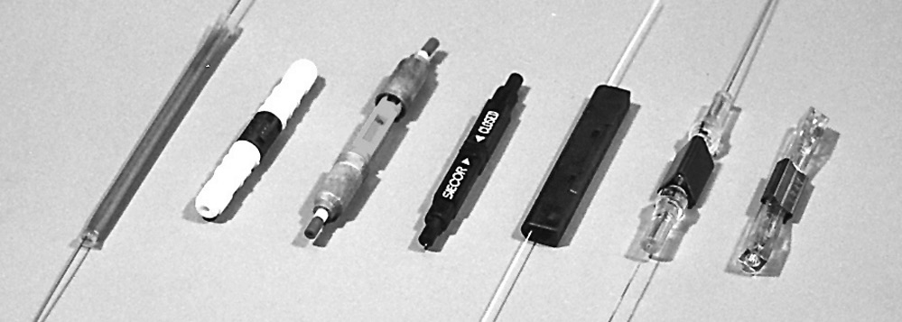
Empalmes por Fusión
Los empalmes por fusión se realizan "soldando" las dos fibras, normalmente mediante un arco eléctrico. Por motivos de seguridad, el empalme por fusión no debe realizarse en un espacio cerrado, como una arqueta, ni en atmósferas potencialmente explosivas. Además, el equipo de empalme por fusión suele ser demasiado voluminoso para la mayoría de las aplicaciones aéreas, por lo que el empalme por fusión suele realizarse en un camión o remolque equipado exclusivamente para este fin.
Las empalmadoras monomodo por fusión están muy automatizadas y es difícil hacer un mal empalme, siempre que se limpien y corten las fibras correctamente y se sigan las instrucciones de uso de la empalmadora. Los empalmes por fusión son tan buenos hoy en día que los puntos de empalme pueden no ser detectables en las trazas de OTDR. Algunas máquinas de empalme sólo hacen una fibra a la vez, pero las empalmadoras de fusión masivas pueden hacer las 12 fibras de una cinta a la vez.
El Proceso de Empalme por Fusión
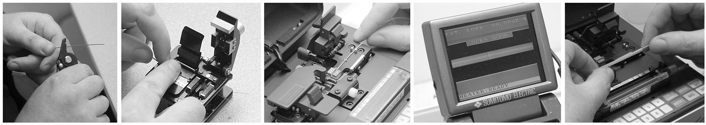
Preparación de las Fibras
El proceso de empalme por fusión es básicamente el mismo para todas las empalmadoras automáticas. El primer paso es pelar, limpiar y cortar las fibras que se van a empalmar. Retire el recubrimiento de protección para exponer la longitud adecuada de fibra desnuda. Limpie la fibra con los paños adecuados. Corte la fibra siguiendo las instrucciones de la cortadora utilizada. Coloque cada fibra en las guías de la máquina de empalme por fusión y sujételas en su sitio.
Ejecutar el Programa de Empalme
En primer lugar, seleccione el programa adecuado para los tipos de fibra que se van a empalmar. La empalmadora mostrará las fibras que se están empalmando en una pantalla de vídeo. Los extremos de las fibras se inspeccionarán para comprobar si están bien cortados y los que estén mal se rechazarán. Esa fibra debe cortarse de nuevo. Las fibras se colocan en posición, se pre-funden para eliminar la suciedad de los extremos y se precalientan para el empalme. Las fibras se alinearán utilizando el método de alineación del núcleo utilizado en esa empalmadora. A continuación, las fibras se fusionarán mediante un ciclo de arco automático que las calienta en un arco eléctrico mientras juntas las fibras a un ritmo controlado.
Una vez finalizada la fusión, la empalmadora inspeccionará el empalme y estimará la pérdida óptica del mismo. Indicará al operario si es necesario rehacer el empalme. El operario retira las fibras de las guías y coloca un protector de empalme permanente mediante termo-retracción o instalando protectores de empalme tipo almeja.
Empalme por Fusión de Masa (cinta)
Los cables de cinta se empalman por fusión de cinta en cinta, y no de fibra en fibra. Así, cada cinta se pela, se corta y se empalma como una unidad. Se necesitan herramientas especiales para pelar la cinta de fibra, normalmente calentándola primero, y después cortar todas las fibras a la vez. Muchas herramientas colocan la cinta en un soporte que la sostiene y alinea durante las operaciones de pelado, corte y empalme. Consulte a los fabricantes de cables y empalmadoras para asegurarse de que dispone de las instrucciones adecuadas.
Empalmes Mecánicos
Los empalmes mecánicos son dispositivos de alineación que mantienen unidos los extremos de dos fibras con algún gel o pegamento entre ellos. Existen varios tipos de empalmes mecánicos, como los pequeños tubos de vidrio o las abrazaderas metálicas en forma de V. Las herramientas para hacer empalmes mecánicos son baratas, pero los empalmes en sí pueden ser más caros. Muchos empalmes mecánicos se utilizan para restauración, pero con la práctica pueden funcionar bien tanto con fibra monomodo como multimodo, y utilizando una cuchilla de calidad como las que se utilizan para empalmes por fusión.
Proceso de Empalme Mecánico
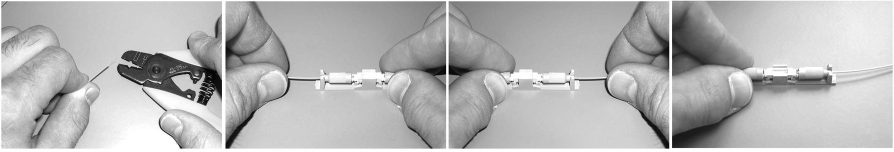
Preparación de las Fibras
El proceso de empalme es básicamente el mismo para todos los tipos de empalmes mecánicos. El primer paso es pelar, limpiar y cortar las fibras que se van a empalmar. Retire el recubrimiento de protección para exponer la longitud adecuada de fibra desnuda. Limpie la fibra con los paños adecuados. Corte la fibra siguiendo las instrucciones de la cuchilla utilizada. El uso de una cortadora de alta calidad, como las que se suministran con las empalmadoras por fusión, producirá empalmes más uniformes y con menos pérdidas.
Realización del Empalme Mecánico
Inserte la primera fibra en el empalme mecánico. La mayoría de los empalmes están diseñados para limitar la profundidad de inserción de la fibra mediante la longitud pelada de la cubierta protectora de la fibra. Sujete la fibra en su lugar si las fibras se sujetan por separado. Algunos empalmes sujetan ambas fibras a la vez. Repita estos pasos para la segunda fibra.
Puede optimizar visualmente la pérdida de un empalme mecánico utilizando un localizador visual de fallos, una fuente de prueba láser visible si los extremos de fibra que se empalman son visibles. Retire suavemente una de las fibras un poco, girándola ligeramente y volviéndola a insertar hasta que la luz visible se reduzca al mínimo, lo que indica la pérdida más baja.
Haciendo Buenos Empalmes
Realizar empalmes con bajas pérdidas de forma constante depende de unas técnicas adecuadas y de mantener el equipo en buen estado. Por supuesto, la limpieza es fundamental. Los pelacables deben mantenerse limpios y en buen estado y sustituirse cuando estén mellados o desgastados. Los cortadores son de vital importancia, ya que el secreto para obtener empalmes de calidad - ya sea por fusión o mecánicos - radica en realizar buenos cortes en ambas fibras. Mantén los cortadores limpios y asegúrate de que las cuchillas de rayado estén alineadas y se reemplacen regularmente. Las empalmadoras de fusión deben mantenerse correctamente y los parámetros de fusión deben ajustarse a las fibras que se van a empalmar. En los empalmes mecánicos, es importante ejercer una ligera presión sobre la fibra para mantener los extremos unidos mientras se realiza el crimpado. Si es posible, utilice un localizador visual de fallos (VFL) para optimizar el empalme antes de crimpar.
Protección de Empalmes
Para protegerlos del entorno y los daños, los empalmes deben colocarse en una caja protectora. Por lo general, se colocan en una bandeja de empalme que, a su vez, se coloca dentro de un cierre de empalme para instalaciones OSP o una caja de panel de parcheo para aplicaciones en predios de interior. En los cierres de empalme y en cada extremo, los cables con blindaje metálico o elementos de resistencia deben estar debidamente conectados a tierra y unidos.
Se debe tener cuidado al disponer las fibras y los empalmes en las bandejas de empalme y los tubos holgados en el cierre de empalme. A menudo, las fibras se rompen al montar las bandejas y el cierre o al volver a introducirlas para solucionar problemas y repararlas. Los cables deben fijarse al cierre de empalme y sellarse correctamente. Generalmente los cables de tubo holgado tendrán los tubos extendiéndose desde la entrada del cierre hasta la bandeja, donde se aseguran, luego aproximadamente 1 metro de fibras desnudas se organizan en la bandeja después del empalme. Se debe tener cuidado de unir adecuadamente los conductores eléctricos, como la armadura de algunos cables o los miembros de resistencia metálicos centrales, al cierre y en cada extremo.
Todos los cierres deben estar sellados para evitar la entrada de humedad. Los cierres deben fijarse correctamente, determinándose su ubicación en función del tipo de instalación, y el cable sobrante debe enrollarse y almacenarse adecuadamente. Esto puede ser en un pedestal o bóveda, en un poste o torre o enterrado bajo tierra.
Elección del Tipo de Empalme
La elección entre el empalme por fusión y el empalme mecánico puede basarse en varios parámetros, como el rendimiento, la fiabilidad y el coste. Además, los instaladores pueden elegir el tipo con el que estén más familiarizados o para el que ya dispongan de equipo. Desde el punto de vista del rendimiento, los empalmes por fusión ofrecen pérdidas y reflectancia muy bajas, por lo que se prefieren para redes monomodo. Sin embargo, la fusión puede no funcionar bien en algunas fibras multimodo, por lo que los empalmes mecánicos pueden ser preferibles para MM, a menos que se trate de una aplicación submarina o aérea, donde se prefiere la mayor fiabilidad del empalme por fusión.
Desde el punto de vista de la fiabilidad, un empalme por fusión es la mejor opción. Si se realiza correctamente y se sella en un protector de empalmes, el empalme debería durar tanto como el propio cable. Las pruebas han demostrado que los empalmes mecánicos también son duraderos, pero no tienen la resistencia mecánica de un empalme por fusión.
Si la cuestión es el coste, la elección depende del número de empalmes que se vayan a realizar. El empalme por fusión requiere un equipo caro, pero hace empalmes de menos costo, mientras que los empalmes mecánicos requieren un equipo barato y un hardware de empalme mas costoso. Si hace muchos empalmes (y puede haber miles en una gran red de telecomunicaciones o CATV), los empalmes por fusión serán menos caros. Si sólo necesita unos pocos empalmes o está preparando una restauración y no dispone de empalmadora de fusión, los empalmes mecánicos pueden ser una opción lógica.
Preguntas de Repaso
Verdadero/Falso
Indique si la afirmación es verdadera o falsa.
______ 1. La mayoría de las terminaciones de campo monomodo se realizan mediante el empalme por fusión de un latiguillo o pigtail preparado directamente en el cable y hecho en la fábrica.
______ 2. Los conectores SC y LC tienen férulas de distinto tamaño y no pueden acoplarse.
Elección múltiple
Identifique la opción que mejor complete el enunciado o responda a la pregunta.
______ 3. ¿Qué conector fue estandarizado en la primera versión de la norma TIA/EIA 568 para cableado de predios?
- ST
- SC
- LC
- Cualquiera con norma FOCIS
______ 4. ¿Qué tipo de conector se especifica ahora en la última norma 568?
- SC
- LC
- MT-RJ
- Cualquier conector con un documento FOCIS
______ 5. ¿Qué método se utiliza en fábrica para fijación de conectores a los cables para hacer patchcords?
- Epoxi/pulido
- Adhesivo anaeróbico
- Prepulido/empalme
- Cualquiera de los anteriores
______ 6. ¿Qué se necesita para obtener bajas pérdidas en un conector prepulido/para empalme (SOC)?
- Buena técnica de decapado
- Buen corte
- Engarce suave
- Tipo de cable adecuado
______ 7. La diferencia entre un conector de fibra óptica y un empalme es
_____________.
- Los conectores son más grandes que los empalmes
- Los conectores son desmontables; los empalmes permanentes
- Los conectores requieren adhesivos
- Los empalmes requieren herramientas caras
______ 8. ¿Cuál de los siguientes requisitos de rendimiento no es
compartido por conectores y empalmes?
- Baja pérdida
- Baja Reflexión
- Repetibilidad
- Durabilidad en caso de apareamientos repetidos
______ 9. En los conectores monomodo la _________ es tan importante como la baja pérdida.
- Facilidad de terminación sobre el terreno
- Baja reflectancia
- Bajo coste
- Compatibilidad con muchos tipos de cables
______ 10. Tanto los empalmes mecánicos como los conectores prepulidos/empalmados requieren un/a buen/a _______ para tener bajas pérdidas.
- Técnica de pulido sobre el terreno
- Corte en la fibra que se está terminando
- Pérdida de fibra
- Diseño de cables
______ 11. El pulido de contacto físico (PC) en los conectores está diseñado para reducir _____________.
- Pérdida
- Reflectancia
- Pérdida y reflectancia
- Tiempo de pulido
Cazar Parejas
Identifica los siguientes conectores:
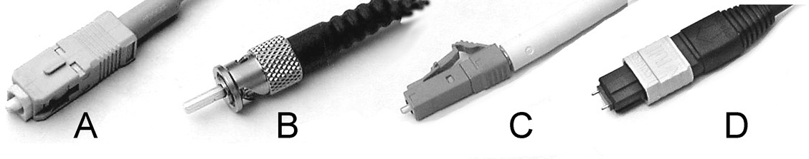
______ 12. ST
______ 13. SC
______ 14. LC
______ 15. MTP
Estudio Adicional
Consulta las fichas técnicas y las notas de aplicación de los conectores de los fabricantes.
Proyectos de Laboratorio
Terminar cables símplex con chaqueta y/o fibras con recubrimiento de 900 micrones con conectores utilizando varios métodos y estilos de conectores. Inspeccione cada conector y compruebe las pérdidas al terminar.
Empalme fibras simples y/o de cinta con una empalmadora por fusión. Realice la prueba con un OTDR (consulte el capítulo Pruebas) y compare los resultados de la prueba OTDR con la estimación proporcionada por la empalmadora.
Empalme fibras individuales con empalmes mecánicos. Optimice con un localizador visual de fallos. Compruebe las pérdidas con un OTDR o un equipo de prueba de pérdidas. Empalme varias veces utilizando diferentes cortadoras para ver cómo afecta a la pérdida.